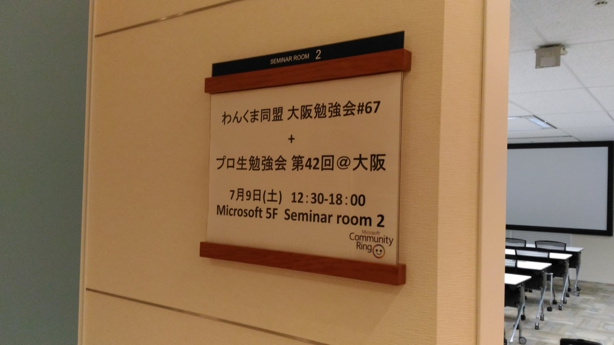
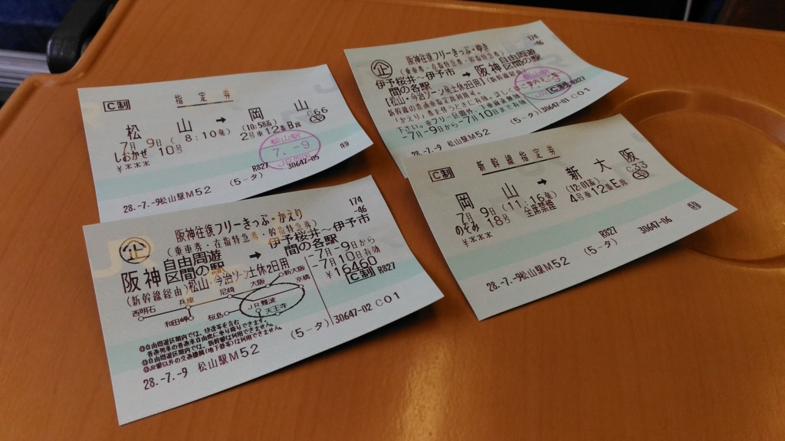
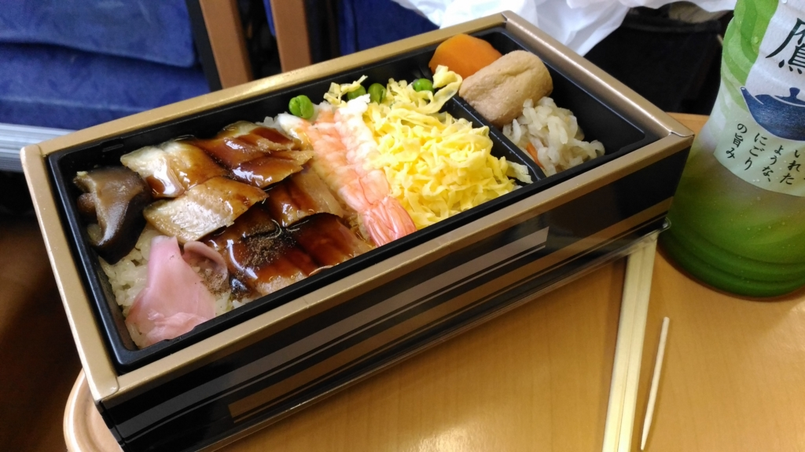
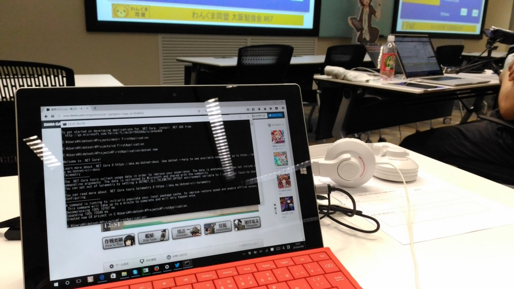
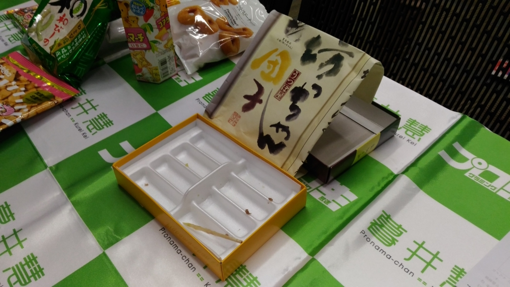
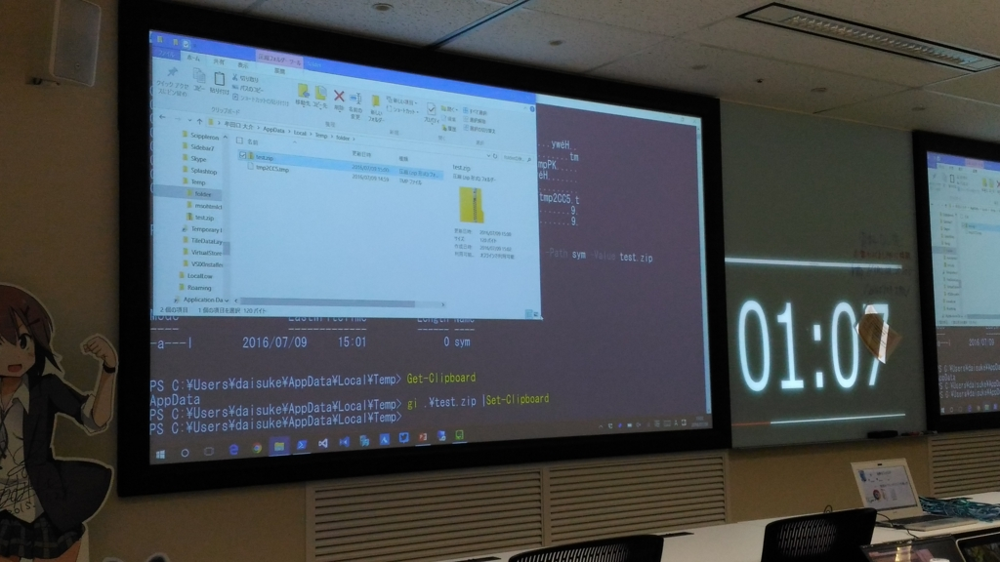

プログラミング生放送勉強会 第42回＠大阪 + わんくま同盟 に参加してきました #pronama
公開日：

ちょっと参加はキビしいかなーと思っていたのですが、直前になってスポッと予定が空いたので、思い切って行ってきました。
宿が心配だったのだけど、日本橋で4,000円代（カプセルホテルじゃないヤツ！）で取れちゃったので、もう、これは行くっきゃないかな、と。
阪神往復フリーきっぷ

愛媛・松山から大阪へ行く方法はいくつかあるのですが（飛行機、フェリー、高速バス、泳ぐなどなど）、今回は鉄道を使いました。なにげに大阪へ電車で行くのは初めてかも。
松山から大阪へ行くには、“阪神往復フリーきっぷ”がお勧め。
松山・今治ゾーンからだと17,490円（平日4日間の場合。休日二日間なら16,460円）で、
- 特急しおかぜの往復指定席（ただし帰りはだいたい混んでてとれねぇ……）
- 新幹線の行き帰り（のぞみの指定席もオッケー）
- 西明石以東の阪神エリア乗り降り自由（もちろんJRのみ）
みたいな感じで割とお得です（素の料金は片道 10,950円、指定料金はたぶん含まず）。飛行機（ANA、伊丹着）の場合は旅作*1で最安30,000円、フェリーだと二等寝台7,000円程度×2＋宿代＝20,000円ちょい。フェリーと同じぐらいの値段だけど時間の自由が効き、飛行機より安いって感じでしょうか*2。この間までは Peach が価格・時間ともに最強だったんですけど、日に一便に減ってしまって 松山 → 関西は少し使いにくくなってしまいました。おかげで、鉄道で行くのが相対的にいい感じになってきた。

駅弁も食べられるしな(＾ω＾)
逆に“阪神往復フリーきっぷ”で JR を使うときの問題は
- 四国を脱出するのに3、4時間かかる（岡山 → 新大阪は40分程度）。8時に出て12時過ぎにつく感じ
- 強風で瀬戸大橋を渡れないことがある
ことですかねー。予讃線は高縄半島をグルッと回らない近道線を作ってほしいもんです（今治民、ごめんな）。
勉強会
プロ生はともかく、わんくまは久しぶりかも。昔、横浜の中華街に中華料理を食べに行って以来だねー（【特集】“IT 勉強会スタンプラリー”で行く、全国コミュニティ探訪 第2回 - 窓の杜）。
「.NET Coreで生まれ変わる.NET ,ASP.NET, EF Core,」by 中博俊（わんくま同盟）

ASP.NET Core ＋ Visual Studio Code で遊んでみるみたいな内容。ちょうど自分も数日前に試してみたことなので、復習がてら聞きました。（艦これやりながら）実際に手でも動かしてみたのですが、割と簡単ですね。
「Xamarin 関連」by jz5（プロ生）
Xamarin Form でプロ生ちゃんアプリを作ったときの体験談みたいな内容。プロ生ちゃんアプリは、プロ生愛媛でも紹介していた“最寄りの消防本部に電話を掛けるやつ”です。データ SIM だと緊急電話かけられないから、役に立つときもかろうじてある。
“どうしても C# で iOS/Android アプリを書きたいマン以外にはまだまだお勧めできない”っていうのが正直な感想。自分で使うことはたぶんないですが、耳学問も大事やからね。
それにしても、VB を書いていない jz5 は割と新鮮だったかも。
ライトニングトーク大会

おやつを食べながら観戦。松山で買ってきた坊ちゃん団子は無事売り切れてくれて、ちょっとホッとしました。

どれも面白かったけど（自分もこうやってすらすらできるようになりたいなー）、個人的には牟田口さんの LT が大ヒット。なんか PowerShell 力の高まりを感じる。家に本があったから、もってきてサインしてもらえばよかったぜ……。
「韓非子のススメ」 by あおおにくん（わんくま同盟）
あれ？ IT 勉強会じゃなかったっけ？？（爆笑
韓非は中国・戦国時代の思想家で、法律は大事だぜーと主張した“法家”に分類される人。というか、その法家の代表的な人物。始皇帝を輩出した秦の隣にあった小国・韓の王族で、きっと「国を強くするためには法律をちゃんとしなきゃダメだ！」と思った真面目さんなんだろうな。著書『韓非子』で始皇帝を感動させ、秦に招かれたまではいいのだけど、それに警戒感を抱いた同門の李斯（秦の宰相）にハメられて自殺に追い込まれている。きっと著書とは裏腹に、悪とは無縁のヒトなんじゃなかったかな。
そもそもこの法家ってのは、なにも法を作ってそれに従わせる法治主義だけを唱えたわけじゃなくて、儒家の信奉する徳・礼の支配を否定し、人間が本源的に備えるインセンティブ（欲望・性向）なんかをよく考えて行動したり、ルール設計しようぜみたいな考えも持っていた。
法家っぽい思想は今の山東半島にあった斉という国がルーツなのだけど、この国は始祖・太公望、名宰相・管仲以来、制度や法律を重視する考えが根付いていた（儒家が尊敬する周公旦との問答は、それを反映していて面白いかも）。そしてもう一つ、斉には“礼みたいな虚飾を排して、自然そのものを見ようぜ”という老荘の思想の流れがあり、斉の首都は天下からそれ系の人物が集まっていた。そのなかには儒家ながらも性悪説を唱える現実派・荀子なんか混じっていて、大いに影響を受けたようだ（逆に、the 儒家ってかんじの理想派・孟子なんかは馴染めなかったっぽいな）。
その二つの流れの集大成が、韓非子の思想といえる*3。要するに、“人間の欲望を認め、君主はそれをうまくコントロールし、溜めたり伸ばしたりする制度を作って、それに従わせよう”みたいな感じ。権謀術数的なところだけ抜き出して、ルネサンスの政治思想家マキャベリに似ているという人もいる。
そういうのが実際の生活・仕事にも応用できるよねーというのがこのセッションの趣旨だった感じ。『韓非子』の話を卑近な事例にあてはめて説明していたので、知らない人にもわかりやすかったんじゃないかな。確かに応用できるところは多いかも？
「Ansible 関連」by You&I（プロ生）
名前だけは聞いていたけど、なんのことだかよく知らなかった Ansible についての概説。綴りのチェックは大事（ｒｙ
PowerShell でいうところの DSC みたいな感じかなぁ？ 自分には使う機会がなさそうなだけど、環境のセットアップや集中管理をする人には必須の技術なんだろうなーって感じ。デモが Windows → Linux の管理じゃなくて、その逆っぽいのがちょっと新しいなって思った。あ、そういうのもできるんだ、みたいな。
懇親会
勉強会の後は懇親会。福島で日付が変わるあたりまで飲み歩きました。日本橋までタクシーに乗ったので、安い宿をとった意味があんまりない気がしたけど、まぁ、それはそれ。運転手のおっちゃんと「イスラム教徒はあかん」という話になったけど、個人的にはテロをするヒトはごく一部だし、自浄作用がないからと言って全体を否定するのはよくないなーって思ったけど、「タクシーの運転手が一人、酔っ払った客から金をちょろまかしたとしても、タクシーの運転手全員がそうだとは限らないですよねー」みたいな空気を読まない発言はやめておいた。実際、融和のためにはなんとかしないといけない問題ではあるわけで。酔った脳みそには難しすぎる話でした。
追伸
わんくま＠熊本はいいなーと思った。プロ生でもなんでも、そういうキッカケはぜひ活かしたいかも。